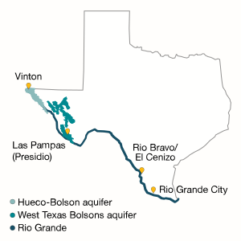

Turn on the faucet. Fill a glass with water. Drink it. Acts so commonplace you perform them without thinking twice.
Flora Barraza cannot. Neither can José Garcia, nor the cooks at Los Pasteles Bakery No. 2, nor the elderly at the Epoca de Oro Adult Day Care.
Along the Texas-Mexico border, nearly 90,000 people are believed to still live without running water. An untold number more — likely tens of thousands, but no one is sure — often have running water of such poor quality that they cannot know what poisons or diseases it might carry.
“Some people have no idea that there’s still third-world conditions in the most powerful country in the world.”
— U.S. Rep. Henry Cuellar, D-Laredo
They are mostly low-income Hispanics, some living in isolated pockets or low-grade developments on land nobody else wanted. Poor, powerless and out of sight, they continue to grapple with the illnesses and hardships that come from lacking such a basic necessity.
“Some people have no idea that there’s still third-world conditions in the most powerful country in the world,” says U.S. Rep. Henry Cuellar, a Laredo Democrat whose constituents live in some of the worst conditions.
It is not a new problem. State and national governments launched massive efforts to solve it in the 1980s when the border’s population surged. They created huge institutions to funnel billions of dollars toward building treatment plants and pipelines.
But many people have been left behind. Whether rooted in sloppy development, political infighting, lax enforcement or environmental hurdles, each border community’s challenges tell a version of the same story — families struggling for an essential resource most people take for granted.
Nestled in the mountains of West Texas near Big Bend State Park, the small community of Las Pampas is so remote that it has never been worth the cost to run pipes to just a few dozen homes. Residents are left to haul their water from miles away.
In Rio Bravo and El Cenizo, neighboring border towns a few miles south of Laredo, a brand-new water treatment plant was supposed to provide nearly 10,000 people with clean drinking water. But local leaders never mustered the political will or dollars necessary to run it properly, and last year seven workers were indicted for allegedly faking water quality reports.
On the dry banks of the Rio Grande in far West Texas, many in the village of Vinton have hoped for decades to give up contaminated groundwater wells and pipe in clean water from big-city neighbor El Paso. But local political infighting got in the way.
And in the Rio Grande Valley, a new water plant should have delivered clean drinking water for 14,000 people in Rio Grande City. But a tangled web of privately run corporations still serves much of the city.
From poorly treated water to no running water at all, concerns about the damage being inflicted on public health are grave. The burdensome lifestyles thrust upon these four communities and others along the border are emblematic of a widespread indignity: Despite the state’s development and economic progress, some Texans hold a more tenuous grasp on a civilized life.
“What’s interesting about this is that despite these hardships, [these communities] continue to grow,” said Jacqueline Angel, a public affairs professor who studies Hispanics’ health outcomes and demographics at the University of Texas at Austin. “The population is growing. The problem is not fading.”
An Unmeasured Toll on Health
People who live in the village of Vinton, just outside El Paso, are more likely than their neighbors to have skin problems and gastrointestinal issues — stomach cramps, vomiting and diarrhea — among other maladies.
Researchers believe high levels of arsenic, E. coli and other contaminants found in their drinking water are responsible.
Vinton is one of the few towns that have been formally studied, but its experience is echoed along the border. Bad water makes people sick.
{% include 'app/templates/includes/box_ad.html' %}Stomach and intestinal issues mostly result from drinking water contaminated with bacteria. Chronic public health concerns — like cancer and debilitating diseases — more likely spring from chemical contaminants such as arsenic or pesticides.
But data on the health toll of bad water in most poor Texas communities is murky.
“We provide funding to Texas’ health department, and even then we have difficulties [finding] that data,” said José Luis Velasco, U.S. executive director of the United States-México Border Health Commission.
Because many living on the border do not have health insurance, and others are undocumented immigrants, it’s likely most diseases and ailments resulting from unsafe water are underreported.
Texas physicians are required to report cases of certain infectious diseases to local and state health departments. But they can’t report illnesses they never see.
“It’s very difficult for [poor border residents] to go to clinics and hospitals, so obviously the data won’t get reported,” Velasco said.
State Sen. Judith Zaffirini, a Democrat from Laredo who has worked to improve water quality in border communities, says lingering distrust of tap water — evidenced by the many border residents who buy bottled water even where tap water is safe — proves that local and state officials have more work to do.
“Ensuring clean water is a cost-effective investment,” Zaffirini said. “It’s expensive, but it’s less expensive than dealing with the health consequences.”
{{ macro.photo_overview(OVERVIEW.PHOTO_2, OVERVIEW.CAPTION_2, OVERVIEW.CREDIT_2) }}Money to Help is Drying Up
Institutions run by Texas, the U.S. and Mexico have for years struggled to provide border communities with clean drinking water. And for hundreds of those communities, it has worked, officials say.
In the past three decades, state and federal programs together have pumped at least $1.79 billion into water improvement projects on the border.
The money has brought water treatment plants to small Texas border towns, wastewater treatment facilities to Mexico to prevent raw sewage from being dumped into the Rio Grande, and water pipes to countless homes and businesses.
But the Texas secretary of state’s office still counts tens of thousands of residents in impoverished communities lacking running water — and suffering from it.
Because of the sheer number of agencies involved on both sides of the border, no one accepts primary responsibility for finding and helping communities in need of clean water. Ask any of them who’s in charge and most point the finger at someone else.
“Ensuring clean water is a cost-effective investment. It’s expensive, but it’s less expensive than dealing with the health consequences.”
— State Sen. Judith Zaffirini, D-Laredo
What is clear is that dwindling funds and endless bureaucracy are blunting progress at all levels.
In 1994, the U.S. and Mexico created the North American Development Bank, or NADBank, to keep an eye on environmental issues — especially water — along the border as the North American Free Trade Agreement kicked in and populations exploded in border towns.
In the 1990s, Congress approved hundreds of millions of dollars in grants to NADBank for border water projects. But the bank lacked enough staff to administer all that funding at once for the poor communities that needed it.
Frustrated, lawmakers began to choke off the flow of grant money. Today the bank mostly gives out loans to communities that are big enough or have the wherewithal to pay them back.
“Every single agency has felt the pinch of scarcity of money,” said Temis Alvarez of the Border Environment Cooperation Commission, which helps administer NADBank funds.
The story is similar at the state level. In 1989, the Texas Legislature gave the state’s Water Development Board funding for water and sewer projects in the infamous colonias, which proliferated as developers took advantage of poor residents along the border by peddling cheap housing but never delivering basic necessities like running water.
That funding has since been redirected to any economically distressed area along the border, including colonias. The Water Development Board continues to loan money to such border communities for water projects, but there’s a waiting list. And grant money for those that can’t pay back loans is almost nonexistent.
{{ macro.photo_overview(OVERVIEW.PHOTO_3, OVERVIEW.CAPTION_3, OVERVIEW.CREDIT_3) }}Simply asking for money takes resources, too. Applying for government funds often takes hundreds of hours of work and expertise that poor communities lack. And even for those border communities that do manage to get funds and build water projects, the story doesn’t end there.
Local governments often fail to properly manage treatment plants, or the money and expertise required to operate them doesn’t last. And regulators — like the Texas Commission on Environmental Quality — only have a limited ability to make sure things run smoothly.
“You’ve got to look at what authority the Legislature’s given to everybody,” said Steve Niemeyer, the agency’s head of border affairs. “They’re ultimately the ones responsible if they want to step in and do something.”
He added, “We just do what we’re told, given the authority that we have.”
River Offers Little Help
Along some stretches of the Texas border, the biggest challenge to providing clean water is the Rio Grande itself.
More than 1,200 miles of the river separate Texas and Mexico, and in many stretches it is severely polluted. Cities and companies on both sides dump toxic waste, untreated sewage and other hazardous material into the river each day.
That’s a particular problem in Mexico, where growing cities with overwhelmed treatment plants dump their raw sewage into the Rio Grande, contaminating it with E. coli and other harmful bacteria.
In other areas, where the river is dry, people dig shallow wells and pump water from underground, which carries significant risks of its own. Much of the groundwater along the border has natural contaminants like arsenic. And agricultural and industrial activity, along with the lack of sewer service, mean that toxic waste ends up in the ground, seeping into the groundwater supplies people rely on for drinking.
{{ macro.photo_overview(OVERVIEW.PHOTO_4, OVERVIEW.CAPTION_4, OVERVIEW.CREDIT_4) }}Not all the problems of the Rio Grande — and the groundwater sources that other border communities rely on — are manmade. A 2012 report from the federal Environmental Protection Agency found that much of the border “must rely on source waters of compromised quality due to high [levels of dissolved solid materials], arsenic, fluoride and other natural contaminants.”
And dozens of cultural barriers also stand between government and the people it’s supposed to help.
Border residents already living in austere conditions are often too scared to ask for relief, said John Henneberger, co-director of the Texas Low Income Housing Information Service, a nonprofit that works on housing and community development problems.
Navigating complicated bureaucracy is difficult enough for low-income Texans, let alone for those who don’t speak the language. More than one-third of the Texas border’s 2.7 million residents do not speak English well, according to the state’s Office of Border Health.
In these largely Hispanic enclaves, also home to a large population of immigrants, others distrust the government, or live in fear that speaking out may attract unwanted attention to their immigration status.
“Often these are small rural communities, a number of people may be immigrants, there may be language problems, and people are poor so they don’t have the resources and the time to be able to attend meetings and to stay on top of what government does to them and for them,” Henneberger said.
{{ macro.photo_overview(OVERVIEW.PHOTO_5, OVERVIEW.CAPTION_5, OVERVIEW.CREDIT_5) }}Meanwhile, political will to help improve water quality on the border is largely spent. While the state’s drought has brought a swift response from elected officials, the cries from some border lawmakers about unsafe water have gone largely unheard before the full Legislature.
Other elected officials have either passed the buck to someone else or been reluctant to admit that some of their constituents live in near third-world conditions.
At the local level, border communities operate in silos and have failed to find regional solutions to water challenges, said Carlos Acevedo, a senior project manager for the Border Environment Cooperation Commission.
Added Cuellar: “We’re in an environment of dwindling monies from Washington, and to be quite honest, I don’t hear much from Austin on colonias. I think we need a renewed effort on the colonias, both at the state and federal level.”
This project was crowdfunded via Beacon Reader. To review donors to the project, click here.